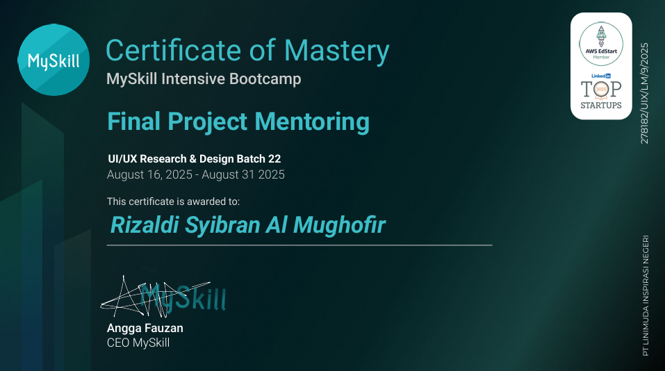
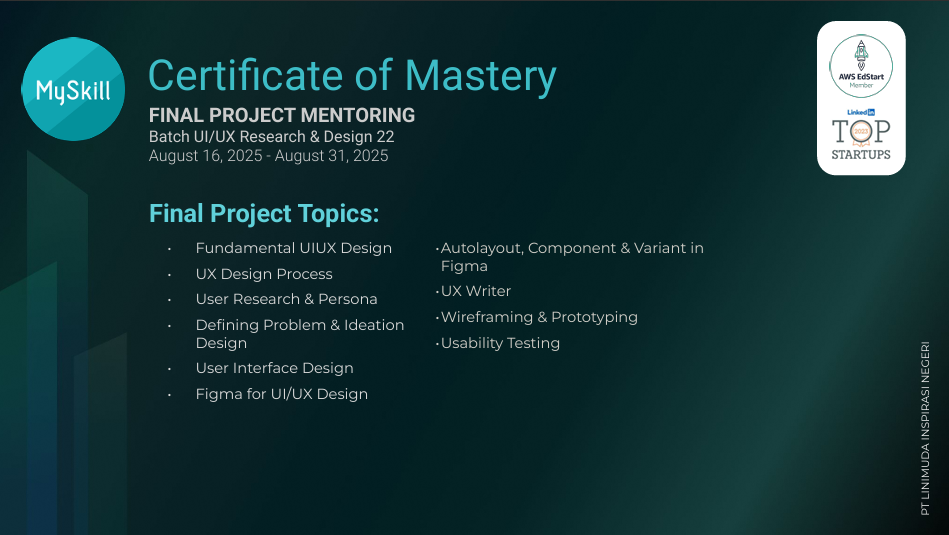
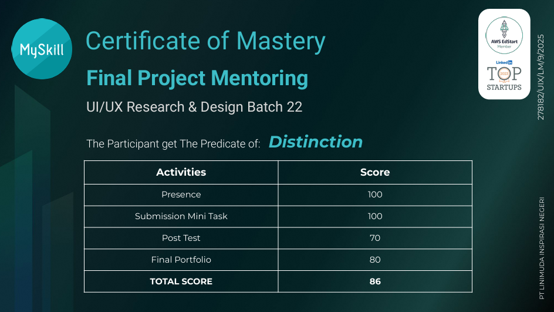

ABOUT
Saya adalah Fresh Graduate Sistem Informasi yang tertarik di bidang UI/UX Design, dengan fokus menciptakan pengalaman tampilan yang bermakna. Bagi saya, desain bukan hanya tentang tampilan yang menarik, tetapi tentang bagaimana sebuah produk dapat benar-benar dipahami dan digunakan dengan mudah oleh penggunanya.
Saya terbiasa melalui seluruh proses desain, mulai dari riset, perumusan masalah, pembuatan wireframe, prototipe, hingga pengujian usability. Saya senang mengeksplorasi ide, dan terus belajar untuk menghasilkan solusi yang tidak hanya estetis, tetapi juga fungsional dan berdampak.
Melalui pengalaman pribadi dalam mengerjakan proyek, saya bekerja di seluruh proses desain mulai dari riset dan perumusan masalah, pembuatan wireframe, prototyping, hingga usability testing. Salah satu proyek yang saya kembangkan adalah Event Giver, aplikasi event amal dan donasi. Dari hasil uji coba pengguna, proyek ini mampu dinikmati oleh kalangan usia. Saya percaya desain yang baik harus terukur, fungsional, dan memberikan dampak nyata.
UI / UX EXPERTISE
UI Design
- Wireframing
- Prototyping
- Visual Design
- Responsive Design
UX Methods
- User Research
- User Persona
- Journey Mapping
- Human-Centered Design (HCD)
SOFTWARE
CERTIFICATIONS

UI-UX Research & Design
Issued by MySkill
UI-UX Research & Design
Issued by MySkill
UI-UX Research & Design
Issued by MySkill